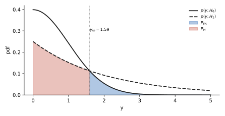
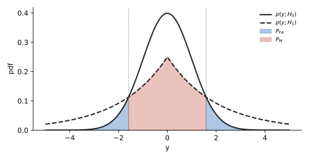
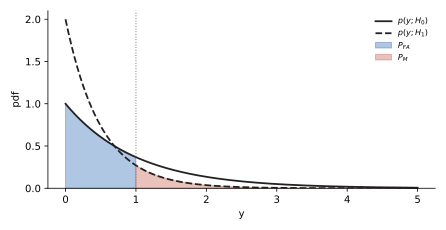
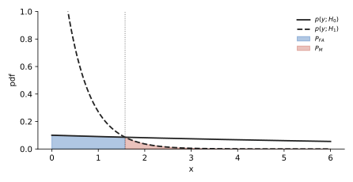
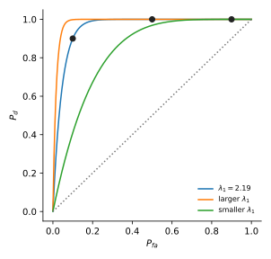
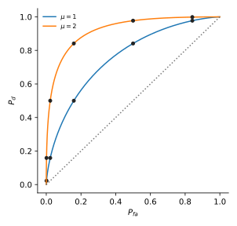

U17 · P_FA, P_D, P_M: sketch them, shade them, compute them#
Before this page
M1 exponents and ln, M2 Gaussian and Q, M9 tail integrals, and U16 for where the threshold comes from (you can read U16 after this page; here the threshold is given or found by setting the two pdfs equal).
The idea in plain words#
Two stories could have produced the number you measured: "nothing there" (\(H_0\)) and "something there" (\(H_1\)). Each story has its own pdf. You draw a line (the threshold) on the axis and promise: on one side I say \(H_1\), on the other I say \(H_0\). Every probability in this unit is just the area of one of the two curves on one side of that line.
The thing that confused me
I kept asking "which curve and which side?". The fix: say the sentence. \(P_{FA}\) = "the truth is \(H_0\) (so use the \(H_0\) curve) but I said \(H_1\) (so the \(H_1\) side)". \(P_D\) = "truth \(H_1\) (its curve), I said \(H_1\) (its side)". \(P_M\) = "truth \(H_1\) (its curve), I said \(H_0\) (the other side)". Curve = the truth, side = what you said.
A tiny example with numbers#
\(H_0\): \(p_0(y) = e^{-y}\), \(H_1\): \(p_1(y) = 2e^{-2y}\), both for \(y\ge0\). Threshold at \(y=1\), and (as in Nov 2022) we say \(H_1\) when \(y < 1\) because the \(H_1\) curve is the taller one near zero.
- \(P_{FA}\) = \(H_0\) curve, \(H_1\) side (\(y<1\)): \(\int_0^1 e^{-y}dy = [-e^{-y}]_0^1 = -e^{-1} - (-1) = 1 - 0.3679 = 0.6321\).
- \(P_D\) = \(H_1\) curve, \(H_1\) side: \(\int_0^1 2e^{-2y}dy = [-e^{-2y}]_0^1 = 1 - e^{-2} = 1 - 0.1353 = 0.8647\).
- \(P_M = 1 - P_D = 0.1353\), which is also \(\int_1^\infty 2e^{-2y}dy = e^{-2}\).
Your turn
Same two pdfs, threshold moved to \(y = 0.5\). Compute \(P_{FA}\) and \(P_D\) (4 decimals).
Answer
\(P_{FA} = 1 - e^{-0.5} = 1 - 0.6065 = 0.3935\). \(P_D = 1 - e^{-1} = 0.6321\). Both dropped: a smaller \(H_1\) region means fewer false alarms and fewer detections. That trade-off is the whole of detection theory.
The formulas, every symbol named#
| Symbol | Meaning | How to get it |
|---|---|---|
| \(p(y;H_0)\), \(p(y;H_1)\) | pdf of the observation under each hypothesis | given in the question |
| \(\gamma\) (or \(\lambda\), \(\eta\)) | threshold on the likelihood ratio \(L(y) = p(y;H_1)/p(y;H_0)\) | given; \(\gamma = 1\) is the common choice |
| \(\gamma'\), \(y_{th}\), \(x_{th}\) | threshold on the observation axis | solve \(L(y) = \gamma\) for \(y\) (U16); for \(\gamma=1\) it is where the two curves cross |
| \(\mathcal X_1\) | the set of \(y\) where you decide \(H_1\) | the side of \(y_{th}\) where \(p(y;H_1) > \gamma\, p(y;H_0)\) |
| \(P_{FA}\) | probability of false alarm (type I error, false positive) | \(\int_{\mathcal X_1} p(y;H_0)\,dy\) |
| \(P_D\) | probability of detection (true positive) | \(\int_{\mathcal X_1} p(y;H_1)\,dy\) |
| \(P_M\) | probability of miss (type II error, false negative) | \(1 - P_D = \int_{\mathcal X_0} p(y;H_1)\,dy\) |
| ROC | curve of \(P_D\) (vertical) against \(P_{FA}\) (horizontal) as the threshold moves | compute a few \((P_{FA}, P_D)\) pairs and join them |
Where they come from. "Probability that \(y\) lands in a set" is the area of the pdf over that set. Nothing deeper.
What the exam asks, in its own words#
| IF YOU SEE | It means |
|---|---|
| "sketch the likelihoods" / "roughly plot the PDFs" | draw both curves on one axis with 2 or 3 labelled points each (value at 0, where they cross, how fast they die) |
| "indicate \(P_{FA}\) and \(P_M\) in the plot" | shade: \(P_{FA}\) = area under the \(H_0\) curve on the \(H_1\) side; \(P_M\) = area under the \(H_1\) curve on the \(H_0\) side |
| "for a threshold \(\gamma = 1\)" | the threshold is on the likelihood ratio; on the axis it is the crossing point of the two curves |
| "pay special attention to the inequality" | check which side is the \(H_1\) side (the exam has caught people deciding \(H_1\) on the wrong side) |
| "for \(P_{FA} = 0.1\) calculate the threshold" | write \(P_{FA}\) as an integral with the unknown limit, set it equal to 0.1, solve for the limit (M1 for the \(\ln\)) |
| "use \(Q(x) = \int_x^\infty\ldots\)" / an erf table / band values | the Gaussian area has no closed form; the exam hands you the numbers (M2) |
| "there is no need to provide exact numerical values" | leave \(Q(1.59)\) as it is; still write the integral and its limits |
| "plot the ROC curve" | \(P_D\) on the vertical axis, \(P_{FA}\) on the horizontal; compute the pairs they ask, join, and remember \((0,0)\) and \((1,1)\) are always on it |
Recipe#
U17 · Threshold, regions, areas
- Write both pdfs with their domain (\(y\ge0\)? all \(y\)? \(|y|\)?). Copy them from the question.
- Find the threshold on the axis. If \(\gamma = 1\): set \(p(y;H_1) = p(y;H_0)\) and solve for \(y\) (take \(\ln\) of both sides). If \(\gamma \ne 1\): do U16. If the exam gives \(y_{th}\) directly, skip.
- Decide which side is \(H_1\). Pick any easy test point (often \(y = 0\) or a large \(y\)) and see which curve is larger there. The side where the \(H_1\) curve is on top (times \(\gamma\)) is the \(H_1\) side. Write the sentence "decide \(H_1\) when \(y < y_{th}\)" or "\(y > y_{th}\)".
- Sketch. Mark each curve's value at \(y=0\), the crossing point from step 2, and shade \(P_{FA}\) (\(H_0\) curve, \(H_1\) side) and \(P_M\) (\(H_1\) curve, \(H_0\) side).
- Write the integrals with explicit limits: \(P_{FA} = \int_{H_1\text{ side}} p(y;H_0)dy\), \(P_D = \int_{H_1\text{ side}} p(y;H_1)dy\).
- Evaluate. Exponential: M9. Gaussian: standardise and read \(Q\) or erf (M2). Two-sided region (\(|y| > y_{th}\)): double the one-sided tail.
- Sanity check. Both numbers are between 0 and 1, and \(P_D > P_{FA}\) (if not, you shaded the wrong side).
- If asked for a threshold from a target \(P_{FA}\): write the step-5 integral with unknown limit, set equal to the target, solve (M1).
Worked exam question, one step at a time#
April 2024 · 4b · 1.5 p
Consider the hypothesis
where \(y > 0\).
- Sketch the likelihoods.
- For a threshold \(\gamma = 1\), indicate the probability of false alarm and the probability of missed detection.
- For a threshold \(\gamma = 1\), calculate the probability of detection and the probability of false alarm. Use the expression \(Q(x) = \int_x^{\infty} \frac{1}{\sqrt{2\pi}} e^{-\frac{u^2}{2}} du\) for the \(Q\) function. There is no need to provide exact numerical values.
Step 1 · Write both pdfs and their values at \(y = 0\). \(p_0(y) = \frac{1}{\sqrt{2\pi}}e^{-y^2/2}\): at \(y=0\) it is \(\frac{1}{\sqrt{2\pi}} = 0.3989\), and it dies like a bell. \(p_1(y) = \frac14 e^{-y/2}\): at \(y=0\) it is \(0.25\), and it dies slowly (at \(y = 2\) it is still \(0.25\cdot e^{-1} = 0.092\), while \(p_0(2) = 0.3989\cdot e^{-2} = 0.054\)).
Now do step 2 yourself: set \(p_1(y) = p_0(y)\), take \(\ln\) of both sides, and get a quadratic in \(y\). Then solve it.
Step 2 · Crossing point. \(\frac14 e^{-y/2} = \frac{1}{\sqrt{2\pi}}e^{-y^2/2}\). Divide both sides by \(\frac14 e^{-y^2/2}\) (rule \(e^a/e^b = e^{a-b}\)): \(e^{-y/2 + y^2/2} = \frac{4}{\sqrt{2\pi}} = \frac{4}{2.5066} = 1.5958\). Take \(\ln\): \(\frac{y^2}{2} - \frac y2 = \ln 1.5958 = 0.4674\). Multiply by 2: \(y^2 - y - 0.9347 = 0\). Quadratic formula (M8): \(y = \frac{1 \pm \sqrt{1 + 3.7388}}{2} = \frac{1\pm 2.1769}{2}\). Positive root: \(y_{th} = 1.5884\).
Now do step 3 yourself: at \(y = 0\), which curve is on top? So on which side of \(1.5884\) do we decide \(H_1\)?
Step 3 · Which side is \(H_1\). At \(y=0\): \(p_0 = 0.399 > p_1 = 0.25\), so near zero \(H_0\) wins. The curves cross once at \(1.5884\); beyond it the slow exponential is on top. Decide \(H_1\) when \(y > 1.5884\). Check with \(y = 3\): \(p_1 = 0.25e^{-1.5} = 0.0558\), \(p_0 = 0.399e^{-4.5} = 0.0044\). Yes.
Now do step 4 yourself: describe the sketch and say which area is \(P_{FA}\) and which is \(P_M\).
Step 4 · Sketch and shade. Bell starting at \(0.399\), falling to almost 0 by \(y = 3\). Exponential starting at \(0.25\), falling slowly, crossing the bell at \(y \approx 1.59\). \(P_{FA}\) = area under the bell to the right of \(1.59\) (truth \(H_0\), said \(H_1\)). \(P_M\) = area under the exponential to the left of \(1.59\) (truth \(H_1\), said \(H_0\)).

Now do step 5 yourself: write \(P_{FA}\) and \(P_D\) as integrals with explicit limits.
Step 5 · Integrals. \(P_{FA} = \int_{1.5884}^{\infty}\frac{1}{\sqrt{2\pi}}e^{-y^2/2}dy = Q(1.5884)\) by the definition the exam gives. \(P_D = \int_{1.5884}^{\infty}\frac14 e^{-y/2}dy\).
Now do step 6 yourself: evaluate the exponential integral exactly (antiderivative, upper limit, lower limit, subtract).
Step 6 · Evaluate. Antiderivative of \(\frac14 e^{-y/2}\) is \(\frac14\cdot\frac{e^{-y/2}}{-1/2} = -\frac12 e^{-y/2}\). Upper limit \(\infty\): \(0\). Lower limit: \(-\frac12 e^{-1.5884/2} = -\frac12 e^{-0.7942} = -\frac12(0.4519) = -0.2260\). Subtract: \(0 - (-0.2260) = 0.2260\). So \(P_D = \frac12 e^{-0.7942} = 0.226\) and \(P_M = \int_0^{1.5884}\frac14 e^{-y/2}dy = \frac12(1 - e^{-0.7942}) = 0.274\).
Step 7 · Sanity. \(Q(1.5884) \approx 0.056\) (table: \(Q(1.59) = 0.0559\)). \(P_D = 0.226 > P_{FA} = 0.056\). Fine.
The half-area issue in this question
As printed, each pdf on \(y>0\) has area \(\frac12\) (half a bell, half of \(\frac12 e^{-y/2}\)), so \(P_D + P_M = \frac12\). The exam says numbers are not needed, so the integrals above are the full-mark answer. If you want proper probabilities, fold both onto \(y>0\) (multiply by 2): \(P_{FA} = 2Q(1.5884) = 0.1118\), \(P_D = e^{-0.7942} = 0.4519\). Those are exactly the numbers of the January 2022 twin question below, which uses \(|y|\).
Answer
Decide \(H_1\) when \(y > 1.5884\). \(P_{FA} = \int_{1.5884}^\infty p(y;H_0)\,dy = Q(1.5884) \approx 0.056\). \(P_D = \int_{1.5884}^\infty \frac14 e^{-y/2}dy = \frac12 e^{-0.7942} \approx 0.226\) (folded onto \(y>0\): \(0.112\) and \(0.452\)).
Do it cold · 1#
January 2022 resit · 4b + 4c · 0.7 + 1 p
Consider hypotheses: \(\mathcal{H}_0: p_Y(y) = \frac{1}{\sqrt{2\pi}} e^{-\frac{y^2}{2}}\), \(\mathcal{H}_1: p_Y(y) = \frac{1}{4} e^{-\frac{|y|}{2}}\).
4b Provide a sketch for the two PDFs and indicate the probability of false alarm and missed detection for a likelihood test with \(\gamma = 1\).
4c Calculate the probability of detection and false alarm for \(\gamma = 1\). Below you can find a table with selected values of the Q-function: \(Q(1.51) = 0.0655\), \(Q(1.52) = 0.0643\), \(Q(1.53) = 0.0630\), \(Q(1.54) = 0.0618\), \(Q(1.55) = 0.0606\), \(Q(1.56) = 0.0594\), \(Q(1.57) = 0.0582\), \(Q(1.58) = 0.0571\), \(Q(1.59) = 0.0559\).
Solution
What is asked. Same curves as April 2024 but two-sided: both pdfs live on all of \(y\), and the Laplacian uses \(|y|\).
Step 1. \(p_0(0) = 0.399\), \(p_1(0) = 0.25\). Both symmetric around 0.
Step 2 · crossing. \(\frac14 e^{-|y|/2} = \frac{1}{\sqrt{2\pi}}e^{-y^2/2}\). Same algebra as before with \(|y|\) in place of \(y\): \(y^2 - |y| - 0.9347 = 0 \Rightarrow |y| = 1.5884\), so the curves cross at \(y = \pm1.5884\).
Step 3 · side. At \(y=0\) the bell is on top (\(H_0\)). In the tails the Laplacian is on top. So decide \(H_1\) when \(|y| > 1.5884\): two regions, left tail and right tail.
Step 4 · sketch. Bell (peak 0.399) and a tent-shaped curve (peak 0.25, straight-ish sides in log scale) crossing at \(\pm1.59\). \(P_{FA}\) = both tails of the bell beyond \(\pm1.59\). \(P_M\) = the tent between \(-1.59\) and \(1.59\).

Step 5 · integrals. \(P_{FA} = \int_{-\infty}^{-1.5884}p_0 + \int_{1.5884}^{\infty}p_0 = 2Q(1.5884)\) by symmetry. \(P_D = 2\int_{1.5884}^\infty \frac14 e^{-y/2}dy\).
Step 6 · evaluate. \(P_{FA} = 2\times0.0559 = 0.1118\) (table at 1.59). \(P_D\): antiderivative \(-\frac12 e^{-y/2}\); upper \(0\), lower \(-\frac12 e^{-0.7942} = -0.2260\); one tail \(= 0.2260\); two tails \(= 0.4519\). \(P_M = 1 - 0.4519 = 0.5481\).
Answer
Decide \(H_1\) for \(|y| > 1.5884\). \(P_{FA} = 2Q(1.5884) = 0.1118\). \(P_D = e^{-0.7942} = 0.4519\).
Do it cold · 2#
November 2022 · 4d + 4e · 0.25 + 0.5 p
For the case \(N=1\) the hypothesis test becomes \(|x_n| \underset{\mathcal{H}_1}{\overset{\mathcal{H}_0}{\gtrless}} \gamma'\), which can be simplified by considering a new random variable \(Y = |X|\) with distributions \(\mathcal{H}_0: p(y;\mathcal{H}_0) = e^{-y}\), \(\mathcal{H}_1: p(y;\mathcal{H}_1) = 2e^{-2y}\). The likelihood ratio test is then given by \(y \underset{\mathcal{H}_1}{\overset{\mathcal{H}_0}{\gtrless}} \gamma'\).
4d Indicate the probability of false alarm \(P_{FA}\) and the probability of miss \(P_M\) for a threshold \(\gamma' = 1\) in the plot. Hint: Pay special attention to the inequality in the decision criteria.
4e For a \(P_{FA} = 0.1\) calculate the threshold \(\gamma'\). For the threshold you have found, calculate the probability of detection \(P_D\).
Solution
Read the inequality. \(y \overset{H_0}{\underset{H_1}{\gtrless}}\gamma'\) means: \(y\) greater than \(\gamma'\) decides \(H_0\) (the top label), \(y\) smaller decides \(H_1\). So the \(H_1\) side is \(y < \gamma'\). That is the hint: the \(H_1\) curve \(2e^{-2y}\) is the tall one near zero.
4d. \(P_{FA}\) = area under \(e^{-y}\) (the \(H_0\) curve) for \(0 \le y < 1\). \(P_M\) = area under \(2e^{-2y}\) (the \(H_1\) curve) for \(y > 1\).

4e, threshold. \(P_{FA} = \int_0^{\gamma'}e^{-y}dy = [-e^{-y}]_0^{\gamma'} = -e^{-\gamma'} - (-1) = 1 - e^{-\gamma'}\). Set \(= 0.1\): \(e^{-\gamma'} = 0.9 \Rightarrow \gamma' = -\ln 0.9 = 0.1054\).
4e, detection. \(P_D = \int_0^{\gamma'}2e^{-2y}dy = [-e^{-2y}]_0^{\gamma'} = 1 - e^{-2\gamma'}\). With \(e^{-\gamma'} = 0.9\): \(e^{-2\gamma'} = (e^{-\gamma'})^2 = 0.81\). \(P_D = 1 - 0.81 = 0.19\).
Answer
\(\gamma' = -\ln 0.9 = 0.1054\); \(P_D = 0.19\). (Tiny, because the two curves overlap heavily and we demanded \(P_{FA} = 0.1\).)
Do it cold · 3#
January 2020 retake · 5 · 2.5 p
Consider the binary hypothesis testing problem where the observed data \(x[0], x[1], \dots, x[n]\) consists of independent identically distributed samples and follows the exponential PDFs \(\mathcal{H}_0 : x[n] \sim \lambda_0 e^{-\lambda_0 x}\), \(\mathcal{H}_1 : x[n] \sim \lambda_1 e^{-\lambda_1 x}\) where \(x \geq 0\), \(\lambda_1 > \lambda_0 > 0\).
- (a) For a single sample of observed data, roughly plot the PDFs for \(\lambda_1 = 2\) and \(\lambda_0 = 0.1\). Calculate and mark the threshold \(x_{th}\) for likelihood ratio \(\mathcal{L}(x_{th}) = 1\). Write down the equations for calculating the probability of detection \(P_d\) and the probability of false alarm \(P_{fa}\) in terms of \(\lambda_0\), \(\lambda_1\) and \(x_{th}\). [0.75 pt.] Hint: The cumulative distribution function for the exponential PDF is \(P(x < x_{th}) = 1 - e^{-\lambda x}\). Design your binary hypothesis test such that \(P_d > P_{fa}\).
- (b) Given \(\lambda_0 = 0.1\), find \(\lambda_1\) that gives \(P_d = 0.9\) when \(P_{fa} = 0.1\). [0.5 pt.]
- (c) Plot the ROC curve with \(P_d\) on the vertical axis and \(P_{fa}\) on the horizontal axis for the \(\lambda_1\) value calculated in (b), by calculating the \(P_d\) for \(P_{fa} = 0.5\) and \(P_{fa} = 0.9\) as reference points for the ROC curve. Roughly sketch (without calculating \(P_d\) and \(P_{fa}\)) two more curves describing the cases where \(\lambda_1\) is increased and \(\lambda_1\) is decreased. [1.25 pt.]
Solution
(a) pdfs. \(p_0(x) = 0.1e^{-0.1x}\): starts at \(0.1\), almost flat. \(p_1(x) = 2e^{-2x}\): starts at \(2\), dies by \(x\approx3\).
Threshold. \(L(x) = \frac{2e^{-2x}}{0.1e^{-0.1x}} = 20e^{-1.9x}\) (\(e^{-2x}/e^{-0.1x} = e^{-1.9x}\)). Set \(= 1\): \(e^{-1.9x} = \frac{1}{20} \Rightarrow -1.9x = \ln(1/20) = -\ln 20 = -2.9957 \Rightarrow x_{th} = 1.5767\).
Side. \(L(x) > 1\) when \(e^{-1.9x} > 1/20\), i.e. for small \(x\): decide \(H_1\) when \(x < x_{th}\) (the steep curve is on top near 0). This also makes \(P_d > P_{fa}\) as the hint demands.
Equations. \(P_d = \int_0^{x_{th}}\lambda_1 e^{-\lambda_1 x}dx = 1 - e^{-\lambda_1 x_{th}}\), \(P_{fa} = \int_0^{x_{th}}\lambda_0 e^{-\lambda_0 x}dx = 1 - e^{-\lambda_0 x_{th}}\) (the CDF from the hint). Numbers at \(x_{th} = 1.5767\): \(P_d = 1 - e^{-3.153} = 1 - 0.0427 = 0.957\), \(P_{fa} = 1 - e^{-0.1577} = 1 - 0.854 = 0.146\).

(b). \(P_{fa} = 0.1\): \(1 - e^{-0.1x_{th}} = 0.1 \Rightarrow e^{-0.1x_{th}} = 0.9 \Rightarrow x_{th} = \frac{-\ln 0.9}{0.1} = \frac{0.1054}{0.1} = 1.0536\). Then \(P_d = 0.9\): \(1 - e^{-\lambda_1\cdot1.0536} = 0.9 \Rightarrow e^{-1.0536\lambda_1} = 0.1 \Rightarrow \lambda_1 = \frac{-\ln 0.1}{1.0536} = \frac{2.3026}{1.0536} = 2.1855\).
(c). \(P_{fa} = 0.5\): \(x_{th} = \frac{-\ln 0.5}{0.1} = \frac{0.6931}{0.1} = 6.931\); \(P_d = 1 - e^{-2.1855\cdot6.931} = 1 - e^{-15.15} \approx 1.000\). \(P_{fa} = 0.9\): \(x_{th} = \frac{-\ln 0.1}{0.1} = 23.03\); \(P_d = 1 - e^{-50.3} \approx 1\). ROC: points \((0,0)\), \((0.1, 0.9)\), \((0.5, 1)\), \((0.9, 1)\), \((1,1)\): a curve that shoots up then runs along the top. Larger \(\lambda_1\) (curves more different) pushes the curve further into the top-left corner; smaller \(\lambda_1\) (curves more alike) pulls it toward the diagonal \(P_d = P_{fa}\).

Answer
(a) \(x_{th} = \ln 20/1.9 = 1.577\); decide \(H_1\) for \(x < x_{th}\); \(P_d = 1 - e^{-\lambda_1 x_{th}}\), \(P_{fa} = 1 - e^{-\lambda_0 x_{th}}\). (b) \(x_{th} = 1.054\), \(\lambda_1 = 2.19\). (c) \(P_d \approx 1\) at both \(P_{fa} = 0.5\) and \(0.9\).
Do it cold · 4 (Gaussian with band values)#
November 2019 · 4a + 4b · 0.5 + 0.5 p
\(\mathcal{H}_0 : x[n] \sim \mathcal{N}(0, \sigma_0^2)\), \(\mathcal{H}_1 : x[n] \sim \mathcal{N}(0, \sigma_1^2)\) where \(\sigma_1 > \sigma_0\).
- (a) For a single sample of observed data, roughly plot the PDF's and mark the threshold for likelihood ratio \(\mathcal{L}(x[n]) = 1\). Write down the equations for calculating the probability of detection \(P_d\) and the probability of false alarm \(P_{fa}\) in terms of \(p(x[n]; \mathcal{H}_1)\) and \(p(x[n]; \mathcal{H}_0)\).
- (b) Calculate the probability of detection and the probability of false alarm when \(\sigma_1 = 3\sigma_0\) and the likelihood ratio is chosen such that the threshold is \(x_{th} = \sigma_1\). For the calculations, use the values given below for \(x \sim \mathcal{N}(0, \sigma^2)\): \(Pr(0 \leq x \leq \sigma) = 0.341\), \(Pr(\sigma \leq x \leq 2\sigma) = 0.136\), \(Pr(2\sigma \leq x \leq 3\sigma) = 0.021\).
Solution
(a). Two bells centred at 0; the \(H_0\) one is narrow and tall, the \(H_1\) one wide and low. They cross at \(\pm x_{th}\). The wide one is on top in both tails, so decide \(H_1\) when \(|x| > x_{th}\). \(P_d = \int_{-\infty}^{-x_{th}}p(x;H_1)dx + \int_{x_{th}}^{\infty}p(x;H_1)dx = 2\int_{x_{th}}^\infty p(x;H_1)dx\); \(P_{fa} = 2\int_{x_{th}}^\infty p(x;H_0)dx\).
(b). Threshold \(x_{th} = \sigma_1 = 3\sigma_0\). \(P_{fa}\): under \(H_0\) the threshold is at \(3\sigma_0\), i.e. three of its own standard deviations. One tail beyond \(3\sigma\): \(0.5 - 0.341 - 0.136 - 0.021 = 0.002\). Two tails: \(P_{fa} = 0.004\). \(P_d\): under \(H_1\) the threshold is at \(\sigma_1\), one of its own standard deviations. One tail: \(0.5 - 0.341 = 0.159\). Two tails: \(P_d = 0.318\).
Answer
\(P_d = 0.318\), \(P_{fa} = 0.004\).
Do it cold · 5 (erf table)#
October 2021 · 4a · 1 p
\(y[n] \sim \mathcal{N}(0, \sigma^2)\) if \(\mathcal{H}_0\), \(\mathcal{N}(\mu, \sigma^2)\) if \(\mathcal{H}_1\), \(\sigma^2 = 1\). Given the cumulative distribution function is evaluated as \(p(y < y_{th}; \mu, \sigma) = 0.5\left(1 + \operatorname{erf}\left(\frac{y_{th} - \mu}{\sigma\sqrt{2}}\right)\right)\) and using the table for \(\operatorname{erf}(x/\sqrt2)\): \(x = -3, -2, -1, 0, 1, 2, 3 \to -0.997, -0.954, -0.683, 0, 0.683, 0.954, 0.997\). Calculate \(P_d\) and \(P_{fa}\) for the threshold values \(y_{th}\) and means \(\mu\) listed: \((y_{th},\mu) = (-1,1), (-1,2), (0,1), (0,2), (1,1), (1,2), (2,1), (2,2), (3,1), (3,2)\). Use the values to plot ROC curves.
Solution
Side. \(\mu > 0\), so the \(H_1\) bell sits to the right; decide \(H_1\) when \(y > y_{th}\). Then \(P_{fa} = P(y > y_{th}; \mu=0) = 1 - 0.5(1 + \operatorname{erf}(y_{th}/\sqrt2)) = 0.5(1 - \operatorname{erf}(y_{th}/\sqrt2))\) and \(P_d = 0.5(1 - \operatorname{erf}((y_{th}-\mu)/\sqrt2))\). Read the table at \(y_{th}\) for \(P_{fa}\) and at \(y_{th} - \mu\) for \(P_d\).
| \(y_{th}\) | \(\mu\) | \(y_{th}-\mu\) | \(P_d\) | \(P_{fa}\) |
|---|---|---|---|---|
| \(-1\) | 1 | \(-2\) | \(0.5(1+0.954) = 0.977\) | \(0.5(1+0.683) = 0.8415\) |
| \(-1\) | 2 | \(-3\) | \(0.5(1+0.997) = 0.9985\) | \(0.8415\) |
| 0 | 1 | \(-1\) | \(0.8415\) | \(0.5\) |
| 0 | 2 | \(-2\) | \(0.977\) | \(0.5\) |
| 1 | 1 | 0 | \(0.5\) | \(0.5(1-0.683) = 0.1585\) |
| 1 | 2 | \(-1\) | \(0.8415\) | \(0.1585\) |
| 2 | 1 | 1 | \(0.1585\) | \(0.5(1-0.954) = 0.023\) |
| 2 | 2 | 0 | \(0.5\) | \(0.023\) |
| 3 | 1 | 2 | \(0.023\) | \(0.5(1-0.997) = 0.0015\) |
| 3 | 2 | 1 | \(0.1585\) | \(0.0015\) |
ROC. One curve per \(\mu\): plot the \((P_{fa}, P_d)\) pairs; the \(\mu = 2\) curve lies above the \(\mu = 1\) curve (more separation, better detector).

Answer
Table above. The January 2019 version (3b) is the same computation with \((X, \mu_1, \sigma_1)\): \(P_{fa} = 0.1585\) for \(X=1\), \(0.023\) for \(X=2\); \(P_d = 0.5, 0.977, 0.8415, 0.8415\) for the four rows (standardise with \(\sigma_1\): \((1-3)/2 = -1\) gives \(0.8415\)).
Where points get lost#
Where points get lost
| Wrong line | Right line |
|---|---|
| "\(P_{FA}\) = area under \(H_1\) curve beyond the threshold" | \(P_{FA}\) uses the \(H_0\) curve (truth \(H_0\)) on the \(H_1\) side (your wrong decision). |
| Shading the right of the threshold because "\(H_1\) is always on the right" | The \(H_1\) side is where \(p(y;H_1) > \gamma\,p(y;H_0)\). Nov 2022 and Jan 2020 have it on the left. Test a point. |
| \(P_M = \int_{\text{threshold}}^{\infty}p(y;H_1)\) in a left-sided test | \(P_M = 1 - P_D\) always; shade the \(H_1\) curve on the \(H_0\) side. |
| Forgetting the second tail when the region is \(\lvert y\rvert > y_{th}\) | Two tails: multiply the one-sided tail by 2 (Jan 2022, Nov 2019). |
| \(Q(1.59)\) read as the area to the left | \(Q\) is the area to the right. Area to the left is \(1 - Q\). |
| \(1 - e^{-2\gamma'}\) evaluated with a fresh number | \(e^{-2\gamma'} = (e^{-\gamma'})^2 = 0.9^2 = 0.81\): reuse what you already have. |
| Stopping at the integral when the exam says "calculate" | Antiderivative, upper limit, lower limit, subtraction, number. Four written lines. |
| \(P_D < P_{FA}\) and moving on | Impossible for a sensible test; you shaded the wrong side. |
True or false (from real MC options)#
| statement | T or F | why |
|---|---|---|
| A false alarm is deciding \(H_1\) when \(H_0\) is true (type I error). | True | Nov 2022 4a: cell "decide \(H_1\), true \(H_0\)" = false positive / false alarm / type I. |
| A miss is deciding \(H_0\) when \(H_1\) is true (type II error). | True | Same table, cell "decide \(H_0\), true \(H_1\)". |
| Using the CDF instead of the tail to compute \(P_d\) puts the ROC curve in the lower triangle. | True | Oct 2021 1e: it computes \(1 - P_d\). |
| Setting the \(H_0\) variance too high is a reason for a ROC curve below the diagonal. | False | Oct 2021 1e: a bad detector approaches the diagonal from above; it never goes below. This is the option that cannot be the reason. |
| On the ROC, \(P_d\) is on the vertical axis and \(P_{fa}\) on the horizontal. | True | Stated in Oct 2021 1e and Jan 2020 5c. |
You can leave this page when you can:
- say the sentence "curve = the truth, side = what I said" and shade \(P_{FA}\) and \(P_M\) for any pair of pdfs.
- find the crossing point of two pdfs by taking \(\ln\).
- evaluate \(\int_0^{\gamma}\lambda e^{-\lambda y}dy\) and \(\int_\gamma^\infty\lambda e^{-\lambda y}dy\) in one line each.
- turn "\(P_{FA} = 0.1\)" into a threshold and then into \(P_D\).
- read \(Q\), erf, or band values for a Gaussian tail, including the two-tailed case.